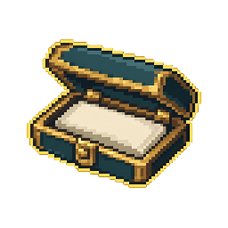
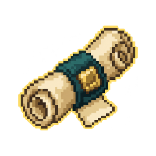
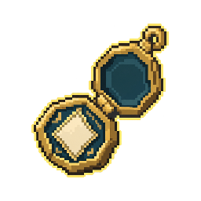
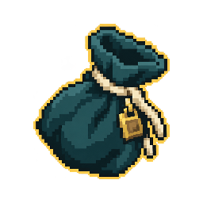
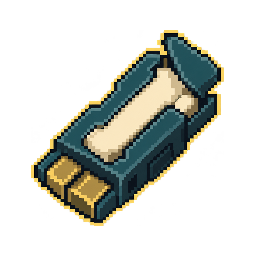

Пять самостоятельных категорий. Эскизы для выбора основы; соответствия конкретным томам пока не назначены.
1. Футляр

Тонкий / толстый; открытый / закрытый
64 px32 px
2. Свиток

Узкий / широкий; свёрнутый / развёрнутый
64 px32 px
3. Медальон

Плоский / объёмный; открытый / закрытый
64 px32 px
4. Мешочек

Плоский / полный; завязанный / раскрытый
64 px32 px
5. Картридж

Тонкий / толстый; цельный / со вставкой
64 px32 px